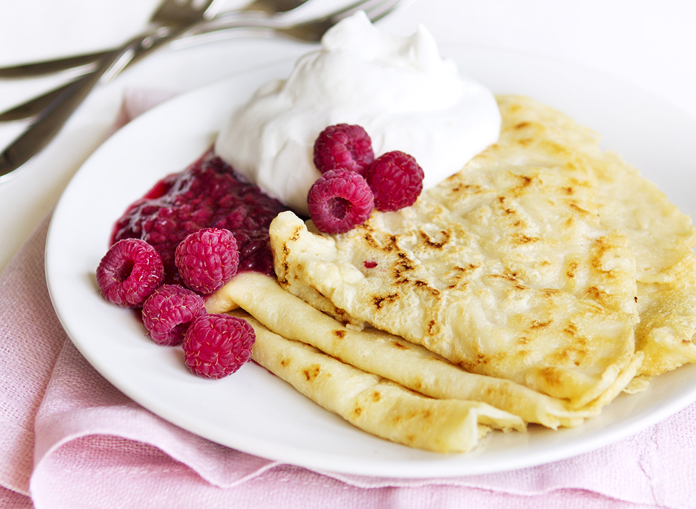
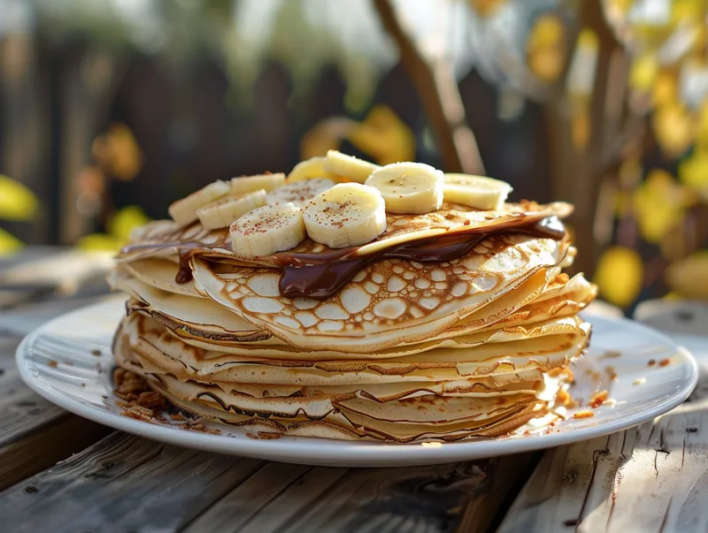

Enkelt recept på pannkakor
Gör traditionella tunna pannkakor med detta enkla och goda pannkaksrecept
Ingredienser
För 4 personer
- 2,5 dl vetemjöl
- 6 dl mjölk
- 3 ägg
- 0,5 tsk salt
- 0,5 msk socker
- Smör
Så här gör du
- Vispa samman äggen med hälften av mjölken.
- Tillsätt mjölet och vispa till en klimpfri smet.
- Vispa i resten av mjölken och saltet.
- Låt smeten vila i 10 minuter.
- Stek tunna pannkakor i lite smör i en stekpanna
- Servera med sylt, bär eller ALLAS favorit - NUTELLA
Serveringsförslag

